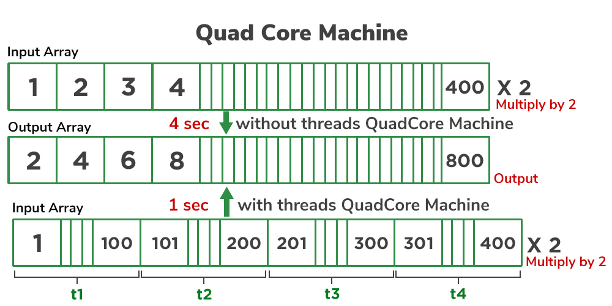

4 Modules
Welcome to the Advanced course of Java for placement!
During this course, you will learn the algorithms and object-oriented programming through the Java programming language. The course includes comprehensive materials and plenty of programming exercises - all of which are tested using our automatic testing service of MCQs and codes.
Anyone can join - but previous basic java programming knowledge is required.Unlike many programming courses found online, ours is completely unabridged; the course’s scope and material are identical to our CS1 Introduction to Programming and Advanced Programming courses.
This is the first course in our computer science learning track, and we use industry-grade tooling from day one. As such, the course is about programming in a real integrated development environment (IDE) instead of a browser or an educational IDE.
The course does not require separate registration. You can simply dive into the first part of the course found over here.
Course Contents The course is split up into 4 modules: Java Programming I and Java Programming II. Each course consists of seven parts, each with its own exercise set. Completing a single part takes approximately 5-20 hours, and we recommend reserving at least 10 hours per part, depending on prior skills with computers.Servlets are the Java programs that run on the Java-enabled web server or application server. They are used to handle the request obtained from the web server, process the request, produce the response, and then send a response back to the web server.
The properties of Servlets are as follows:Execution of Servlets basically involves six basic steps:
Now let us do discuss eccentric point that why do we need For Server-Side extensions?
The server-side extensions are nothing but the technologies that are used to create dynamic Web pages. Actually, to provide the facility of dynamic Web pages, Web pages need a container or Web server. To meet this requirement, independent Web server providers offer some proprietary solutions in the form of APIs (Application Programming Interface).
These APIs allow us to build programs that can run with a Web server. In this case, Java Servlet is also one of the component APIs of Java Platform Enterprise Edition (nowadays known as – ‘Jakarta EE’) which sets standards for creating dynamic Web applications in Java.
Before learning about something, it’s important to know the need for that something, it’s not like that this is the only technology available for creating dynamic Web pages. The Servlet technology is similar to other Web server extensions such as Common Gateway Interface (CGI) scripts and Hypertext Preprocessor (PHP). However, Java Servlets are more acceptable since they solve the limitations of CGI such as low performance and low degree scalability.
What is CGI?CGI is actually an external application that is written by using any of the programming languages like C or C++ and this is responsible for processing client requests and generating dynamic content. In CGI application, when a client makes a request to access dynamic Web pages, the Web server performs the following operations:
So, in CGI server has to create and destroy the process for every request. It’s easy to understand that this approach is applicable for handling few clients but as the number of clients increases, the workload on the server increases and so the time is taken to process requests increases.
Difference between Servlet and CGI
Servlets API’s:
Servlets are built from two packages:
Advantages of a Java Servlet
The Servlet Container
Servlet container, also known as Servlet engine, is an integrated set of objects that provide a run time environment for Java Servlet components. In simple words, it is a system that manages Java Servlet components on top of the Web server to handle the Web client requests.
Services provided by the Servlet container:Threads are the backbone of multithreading. In the real world, surrounded by numerous applications, achieving the required speed to run them simultaneously is not possible unless we introduce the concept of multitasking efficiently. It is achieved by the concept of a thread.
Suppose you are using two tasks at a time on the computer, such as using Microsoft Word and listening to music. These two tasks are called processes. Multitasking occurs when you start typing in Word and simultaneously start the music app. If an exception occurs in Word, indicating a mistake, it means Word is a process broken down into sub-processes. If the machine is dual-core, each core handles one process or task.
In this example, both multiprocessing and multithreading are indirectly used to achieve multitasking. In this way, the mechanism of dividing the tasks is called multithreading, where every process or task is called by a thread, and a thread is responsible for when to execute, when to stop, and how long to be in a waiting state. Hence, a thread is the smallest unit of processing, whereas multitasking is a process of executing multiple tasks at a time.
Multitasking is achieved in two ways:
The lifecycle of a thread is illustrated as follows:
If we incorporate threads in operating systems, process scheduling algorithms in operating systems work on the same concept, incorporating threads in Gantt charts. Some popular scheduling algorithms are:
Imagine the concept of Deadlock in operating systems with threads – how the switching is computed internally if one only has an overview of them.
Now, let's discuss scenarios where multithreading is needed and where it is implemented:
Note: By default, we only have one main thread, which is responsible for the main thread exception even without prior knowledge of multithreading.
There are two ways to implement multithreading:
Java provides the Thread class to achieve programming invoking threads. Some major methods of the Thread class are shown below in a tabular format with the actions performed by them:
| Methods | Action Performed |
|---|---|
| isDaemon() | Checks whether the current thread is daemon or not |
| start() | Starts the execution of the thread |
| run() | Executes the operations statements in the body of this method over a thread |
| sleep() | Static method that puts the thread to sleep for a certain time passed as an argument |
| wait() | Sets the thread back in the waiting state |
| notify() | Gives out a notification to one thread that is in waiting state |
| notifyAll() | Gives out a notification to all the threads in the waiting state |
| setDaemon() | Sets the current thread as a Daemon thread |
| stop() | Used to stop the execution of the thread |
| resume() | Used to resume the suspended thread |
Now let us come up with how to set the name of the thread. By default, threads are named thread-0, thread-1, and so on. But there is also a method that is often used as setName() method. Also corresponding to it there is a method getName() which returns the name of the thread be it default or settled already by using setName() method. The syntax is as follows:
Syntax:
public String getName();
public void setName(String name);
Taking a step further, let us dive into the implementation part to understand more concepts about multithreading. So, there are basically two ways of implementing multithreading:
Illustration: Consider if one has to multiply all elements by 2 and there are 500 elements in an array.

// Case 1
// Java Program to illustrate Creation and execution of
// thread via start() and run() method in Single inheritance
// Class 1
// Helper thread Class extending main Thread Class
class MyThread1 extends Thread {
// Method inside MyThread2
// run() method which is called as
// soon as thread is started
public void run()
{
// Print statement when the thread is called
System.out.println("Thread1 is running");
}
}
// Class 2
// Main thread Class extending main Thread Class
class MyThread2 extends Thread {
// Method inside MyThread2
// run() method which is called
// as soon as thread is started
public void run()
{
// run() method which is called as soon as thread is
// started
// Print statement when the thread is called
System.out.println("Thread2 is running");
}
}
// Class 3
// Main Class
class GFG {
// Main method
public static void main(String[] args)
{
// Creating a thread object of our thread class
MyThread1 obj1 = new MyThread1();
MyThread2 obj2 = new MyThread2();
// Getting the threads to the run state
// This thread will transcend from runnable to run
// as start() method will look for run() and execute
// it
obj1.start();
// This thread will also transcend from runnable to
// run as start() method will look for run() and
// execute it
obj2.start();
}
}
Case 1:
Thread1 is running
Thread2 is running
Here we have created our two thread classes for each thread. In the main method, we are simply creating objects of these thread classes where objects are now threads. So in main, we call thread using start() method over both the threads. Now start() method starts the thread and lookup for their run() method to run. Here both of our thread classes were having run() methods, so both threads are put to run state from runnable by the scheduler, and output on the console is justified.
A package in Java is a mechanism to encapsulate a group of classes, sub packages, and interfaces. Packages are used for:
How packages work:
import java.util.*;
util is a subpackage created inside the java.
Accessing classes inside a package:
// import the Vector class from util package.
import java.util.Vector;
// import all the classes from util package
import java.util.*;
// All the classes and interfaces of this package
// will be accessible but not subpackages.
import package.*;
// Only mentioned class of this package will be accessible.
import package.classname;
// Class name is generally used when two packages have
// the same class name. For example, in the below code, both packages have
// the date class, so using a fully qualified name to avoid conflict
import java.util.Date;
import my.package.Date;
// Java program to demonstrate accessing of members when
// corresponding classes are imported and not imported.
import java.util.Vector;
public class ImportDemo {
public ImportDemo() {
// java.util.Vector is imported; hence, we are
// able to access directly in our code.
Vector newVector = new Vector();
// java.util.ArrayList is not imported; hence
// we were referring to it using the complete
// package.
java.util.ArrayList newList = new java.util.ArrayList();
}
public static void main(String arg[]) {
new ImportDemo();
}
}
These are the packages that are defined by the user. First we create a directory myPackage (name should be same as the name of the package). Then create the MyClass inside the directory with the first statement being the package names.
// Name of the package must be same as the directory
// under which this file is saved
package myPackage;
public class MyClass
{
public void getNames(String s)
{
System.out.println(s);
}
}
Now we can use the MyClass class in our program.
/* import 'MyClass' class from 'names' myPackage */
import myPackage.MyClass;
public class PrintName
{
public static void main(String args[])
{
// Initializing the String variable
// with a value
String name = "GeeksforGeeks";
// Creating an instance of class MyClass in
// the package.
MyClass obj = new MyClass();
obj.getNames(name);
}
}
Note : MyClass.java must be saved inside the myPackage directory since it is a part of the package.
A File is an abstract path; it has no physical existence. It is only when "using" that File that the underlying physical storage is accessed. Here are the steps to create a new file in Java:
First, to create a new file, inbuilt files and functions are used, which may throw exceptions. Exception handling techniques, such as try-catch blocks, are used to deal with these exceptions.
Additionally, the File class is imported for handling file-related
operations. The File object is created using the syntax:
File object_name = new File(Directory)There are two standard methods to create a new file in Java, either directly with the help of
the File class or indirectly with the help of FileOutputStream by
creating an object of the file in both approaches.
Both classes provide some methods which are mainly used to perform operations regarding
files, such as creating, writing, comparing two path names, checking whether a specific file
is present, and many more. Below is an example for creating a new file using the
File class:
import java.io.File;
public class CreateFileExample {
public static void main(String[] args) {
try {
// Specify the directory and file name
File newFile = new File("path/to/directory/MyFile.txt");
// Create a new file
if (newFile.createNewFile()) {
System.out.println("File created: " + newFile.getName());
} else {
System.out.println("File already exists.");
}
} catch (Exception e) {
System.out.println("An error occurred: " + e.getMessage());
}
}
}
The provided Java code demonstrates how to create a new file using the File
class in Java. Here's a breakdown of the code:
Importing the necessary package:
import java.io.File;This line imports the File class, which provides methods for working
with files and directories in Java.
Creating a Java class:
public class CreateFileExample {The code defines a public class named CreateFileExample.
Defining the main method:
public static void main(String[] args) {The main method is the entry point of the program, and it is where the
file creation logic is implemented.
Using try-catch block for exception handling:
try { // Specify the directory and file name File newFile = new File("path/to/directory/MyFile.txt"); // Create a new file if (newFile.createNewFile()) { System.out.println("File created: " + newFile.getName()); } else { System.out.println("File already exists."); }} catch (Exception e) { System.out.println("An error occurred: " + e.getMessage());}The code within the try block attempts to create a new file. If
successful, it prints a message indicating the file creation. If the file already
exists, it prints a corresponding message. If an exception occurs, the
catch block handles it and prints an error message.
This Java program creates a new file named "MyFile.txt" in the specified directory. It uses
the createNewFile() method of the File class to perform the file
creation operation.
The FileOutputStream class in Java is an output stream that can be used to write
data to a file. It is typically used for objects that already exist. Below is the syntax and
an example of using the FileOutputStream class:
Syntax:
FileOutputStream
Example:
echo > myFile.txt
Implementation of the FilesOutputStream Class:
import java.io.FileOutputStream;
import java.io.IOException;
public class CreateFileWithFileOutputStream {
public static void main(String[] args) {
// Specify the file path
String filePath = "path/to/directory/MyFile.txt";
try {
// Create a FileOutputStream object
FileOutputStream outputStream = new FileOutputStream(filePath);
// Write data to the file (e.g., write a string)
String data = "Hello, this is content for the new file!";
byte[] byteArray = data.getBytes();
outputStream.write(byteArray);
// Close the FileOutputStream
outputStream.close();
System.out.println("File created successfully!");
} catch (IOException e) {
System.out.println("An error occurred: " + e.getMessage());
}
}
}
This Java program uses the FileOutputStream class to create a new file named
"MyFile.txt" and write content to it. The content, in this case, is the string "Hello, this
is content for the new file!". The program handles potential IOExceptions with a
try-catch block.